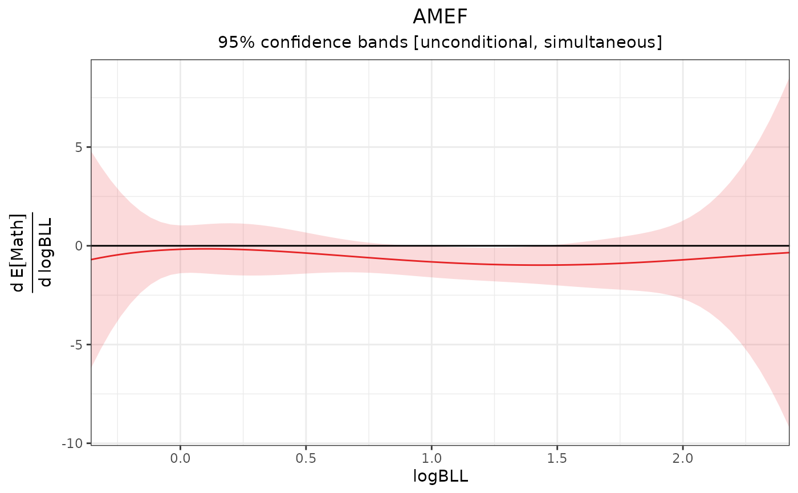

amef() computes the average marginal effect function (AMEF), the derivative of the average dose-response function (ADRF). This computed from an adrf_curve object or from a fitting outcome model directly.
Arguments
- x
an
adrf_curveobject; the output of a call toadrf().- eps
numeric; the step size to use when calculating numerical derivatives. Default is
1e-5(.00001). See Details.
Value
An object of class amef_curve, which inherits from effect_curve.
Details
The AMEF is calculated numerically using the central finite derivative formula:
$$\frac{df(x)}\frac{dx} \approx \frac{f(x + e) - f(x - e)}{2e}$$
The values of the ADRF at the evaluation points are computed using a local polynomial regression as described at effect_curve. At the boundaries of the ADRF, one-sided derivatives are used.
See also
adrf()for computing the ADRFplot.effect_curve()for plotting the AMEFsummary.effect_curve()for testing hypotheses about the AMEFeffect_curvefor computing point estimates along the AMEFcurve_projection()for projecting a simpler model onto the AMEFreference_curve()for computing the difference between each point on the AMEF and a specific reference pointcurve_contrast()for contrasting AMEFs computed within subgroupsmarginaleffects::avg_slopes()for computing average adjusted slopes for fitted models (similar to the AMEF)
Examples
data("nhanes3lead")
fit <- lm(Math ~ poly(logBLL, 5) *
Male * (Age + Race + PIR +
Enough_Food),
data = nhanes3lead)
# ADRF of logBLL on Math
adrf1 <- adrf(fit, treat = "logBLL")
# AMEF of logBLL on Math
amef1 <- amef(adrf1)
amef1
#> An effect_curve object
#>
#> - curve type: AMEF
#> - response: Math
#> - treatment: logBLL
#> + range: -0.3567 to 2.4248
#> - inference: unconditional
#>
#> Use `plot()` (`?adrftools::plot.effect_curve()`) to plot the curve, `summary()` (`?adrftools::summary.effect_curve()`) to test the curve, or `{object}(values)` (`?adrftools::effect_curve-class()`) to compute estimates.
# Plot the AMEF
plot(amef1)

# AMEF estimates at given points
amef1(logBLL = c(0, 1, 2)) |>
summary()
#> AMEF Estimates
#> ───────────────────────────────────────────────────────────
#> logBLL Estimate Std. Error t P-value CI Low CI High
#> 0 -0.1768 0.4285 -0.4125 0.9549 -1.1854 0.8318
#> 1 -0.8144 0.2780 -2.9296 0.0097 -1.4687 -0.1601
#> 2 -0.7111 0.7004 -1.0152 0.6160 -2.3597 0.9374
#> ───────────────────────────────────────────────────────────
#> Inference: unconditional, simultaneous
#> Confidence level: 95% (t* = 2.354, df = 2437)
#> Null value: 0